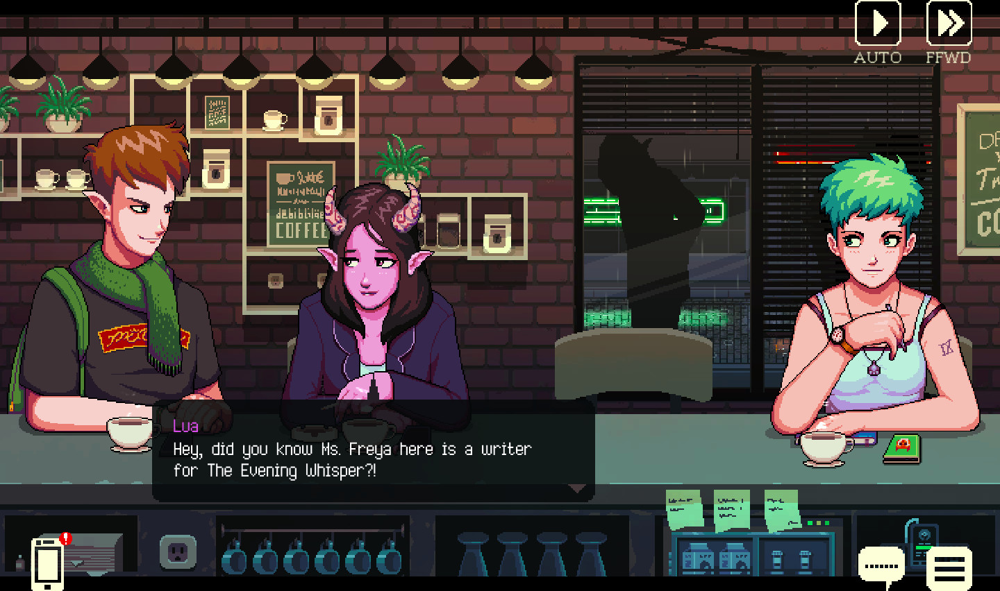
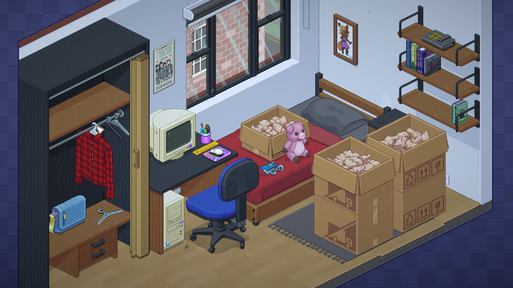
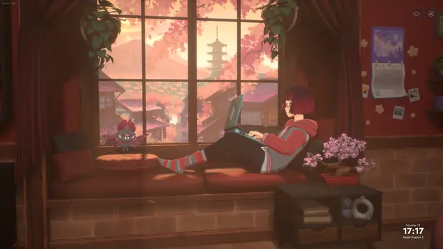
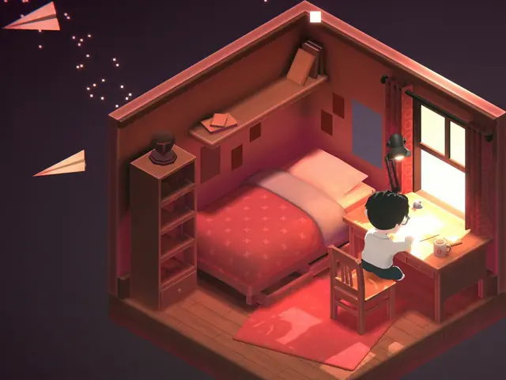
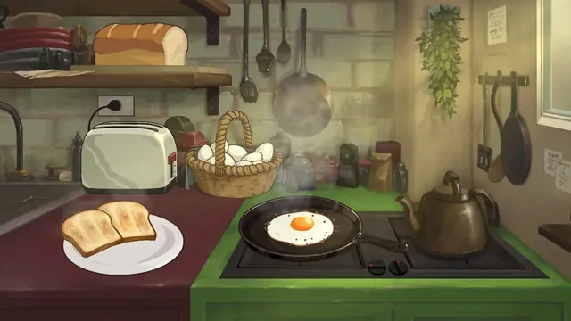
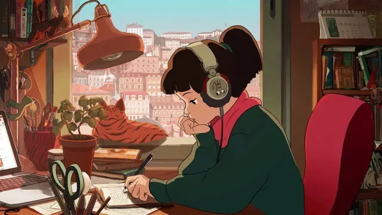
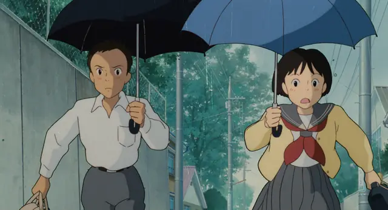
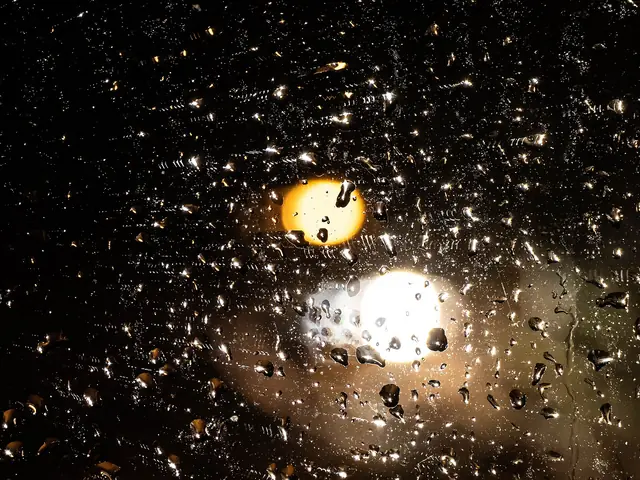

The feel
Lo-fi cozy is a room you are glad to be inside. Game designers at Project Horseshoe define cosiness as the fantasy of safety, abundance and softness, and a cosy space is sharpened by a harsher outside that it shelters you from: a storm, rain on the roof, a busy city.1 The lofi hip hop that gives the style its name works the same way. Two Goldsmiths researchers call its nostalgia warm and relaxing, "a cocoon of sound which does not demand unease from its listeners".2
It is a picture made to keep someone company while they work. Many of the study streams' most devoted listeners are school and university students,2 and their scenes are, in the words of the researcher Kevin Weatherwax, "inviting but not over-engaging", with enough animation to make the viewer feel part of the space without distracting them.3 Games use it the same way. Kind Words is about writing supportive letters to strangers, and its maker Ziba Scott credits the artist Luigi Guatieri and the composer Clark Aboud with setting "the tone that puts you in the right place to play the game".4
- lamp-lit
- rainy
- unhurried
- lived-in
- late-night
- companionable
Where it comes from
Lofi hip hop's loose drums, sidechained melodies and jazz samples follow J Dilla, a producer in Detroit's underground hip hop scene of the mid-1990s, whom fans of the genre call its godfather.2 The French producer Dimitri Somoguy started the ChilledCow channel in March 2015, and its stream looped a scene of Shizuku Tsukishima studying in Whisper of the Heart until the copyrighted character got the channel taken offline in 2017;5 Juan Pablo Machado, then a student in Lyon, drew the Lofi Girl in answer to Somoguy's call for art in the studious style of Studio Ghibli.5,6 Between August 2018 and August 2019 the stream drew an estimated 126.4 million views.2 Games set in the same kind of room followed: Kind Words (lo fi chill beats to write to) sat players in a room writing letters while chill beats played over the radio in 2019,7 and Coffee Talk (2020) began at a Toge Productions game jam as Project Green Tea Latte, a calm coffee shop with lo-fi music.8,9
Core elements
Warm lamp light
The room is lit by warm light from a source you can see, against low ambient light, so the shadows stay soft and the room's colours stay in warm yellows and oranges.1 It is the light of an incandescent bulb, around 2,700 K, the warm white that suits the wood, furniture and fabric of a home.10 Outside the window it is dark: when the Lofi Girl stream turns to night, the cityscape gets dark and lights come on in other windows.3
Rain on the window
Bad weather outside makes the room feel safer. Project Horseshoe's example is cold rain against a window, which emphasises the warmth of a reading nook without threatening it.1 Juan Pablo Machado's very first Lofi Girl image had a black background with rain,6 Coffee Talk began as the feeling of warm drinks in a coffee shop "while it's cold and raining outside",9 and Spirit City: Lofi Sessions lets players turn on the patter of rain on a window.11
A small, lived-in room
The space is small enough to check at a glance, which is part of why it feels safe, and it is full of ordinary domestic things.1 Lofi Girl studies in her cosy little room with her orange cat staring out of the window,3 and Machado drew the books and the lamp on her desk from his own surroundings.6 Unpacking tells a whole life through toothbrushes, shampoo bottles and "personality items" that show the owner's interests, job and health.12
A figure at a desk
Someone sits at a desk, often in headphones. The looping girl studying at her desk on the lofi hip hop stream became a symbol of the genre, and numerous other channels adopted similar artwork.2 She is drawn in an anime style, with big eyes and brown hair, writing in her journal.3 Kind Words puts the player in a room writing letters for others to answer.7
Slow looping animation
Only a few things move. The girl turns her head and plays with her pencil, and the loop runs so smoothly that it hardly feels like one.3 Over a longer cycle the scene passes from day into night.3
Lo-fi hip hop on the radio
The soundtrack is lofi hip hop: slow, almost always instrumental beats on piano or electric piano and jazz-influenced chords, aged with filtered highs and vinyl crackle.2 Ideally it plays inside the scene.1 In Kind Words, players sit in a room while chill beats play over the radio.7
How to do it
Pick a small room with a window
Keep the space small enough to take in at once: small spaces feel cosy because you can quickly see that you are safe, while vast ones feel unknowable.1 Give it a window onto rain, snow or a city at night, a reminder of the colder world the room shelters you from.1
Light it with a warm lamp
Use warm light from a source you can see, keep the ambient light low so the shadows stay soft, and shade a bright bulb instead of leaving it bare.1 Set the lamp around 2,700 K, the warm colour of an incandescent bulb at home.10 Leave the window dark behind it, as in the very first Lofi Girl image, which had a black background with rain.6 For scale, a typical room in a home gets about 50 lux and moonlit ground about 0.1 lux.13
Draw the room on a 2:1 grid
For a pixel-art room, draw the floor and walls in 2:1 pixel steps, about 26.5 degrees instead of true isometric's 30.14 Keep a single 2:1 line on its own layer as a ruler, and count pixels instead of trusting your eye.14 Witch Beam chose isometric for Unpacking because it suited grid-based play; Wren Brier drew grids for the floor, shelves and cupboards of every room, then cut the furniture into pieces to give the illusion of depth.12
Fill it with personal things
Mix functional objects, such as a toothbrush or a shampoo bottle, with personality items that show the owner's interests, job and health. Add more when the room looks empty and take some away when it feels too full.12 Show plenty of food, drink and warmth, and choose ordinary domestic objects: the more mundane, the cosier.1
Run rain down the glass
Each drop refracts, so it shows the scene behind it upside down. Drops that touch merge, and once one passes a certain size it runs down and leaves a small trail.15 Split the rain into many small, static drops and a few large, moving ones, and let each large drop wipe away the small ones in its path. The view behind is out of focus, so a small background texture stretched to fit is enough.15
Animate a slow loop
Build a loop of about 20 seconds, adding the animation in successive layers, as Juan Pablo Machado did for the Lofi Girl.6 Give it just enough movement that the picture is not static, and make the loop smooth enough that it does not feel like one: a head turning, a pencil being played with.3 It should invite the viewer into the room without pulling them away from their own work.3 Over a longer cycle, let the city outside go from day to night and lights come on in other windows.3
Make the beat
Keep the tempo between 70 and 85 BPM, with the kick and snare slightly loose.2 Loop acoustic or electric piano on jazz-influenced extended chords, and sidechain the melody to the kick so its volume rises and falls.2 Then wear the sound down: filter off the high frequencies and lay vinyl crackle or tape hiss over it.2,16 A faint soundscape of the city coming in through a window adds the room around the music.16
Cheat sheet
Do
- Give the music a source in the room, such as a radio or a record player, so the player can connect it to something they see.1
- Show a cat or dog fast asleep, or a character at rest. It tells the player that no danger is near, even beyond what they can see.1
- Layer two kinds of ambient sound under the music: the room's own tone, like a whirring fridge or a leaky tap, and the world outside, like traffic, birds or a neighbour's lawn mower.12
- Keep small human imperfections in the music, such as audible breaths and fingering mistakes.1
- Let the player arrange things their own way. Unpacking became more about self-expression after early playtesters found strict placement rules frustrating.12
Avoid
- Pop-ups and notifications. They use noise, movement and colour to demand attention, which breaks the calm.1
- Letting the weather in. Cold rain against the window makes the room feel warmer, but the same rain blowing through a broken window ends the cosiness.1
- Busy animation. The picture should invite people in without becoming so engaging that it distracts them.3
- Visual and audio clutter. Show plenty, but a crowded, noisy frame works against the calm.1
- Looping frames from a film. ChilledCow's first stream used Shizuku from Whisper of the Heart, and the copyrighted character got the channel taken offline in 2017.5,6
Tools and tutorials
- Coziness in Games (Project Horseshoe report)
Safety, abundance and softness, with notes on light, colour, sound and objects.
- Rain & Water Effect Experiments
Lucas Bebber's breakdown of raindrops that refract, merge and leave trails, with the code.
- Making a rainy window in Unity
The Art of Code builds rain running down a window as a shader, step by step.
- Pixelblog 41: Isometric Pixel Art
Raymond Schlitter on 2:1 lines, cubes and tiles: the basics for drawing a room in pixels.
- How to make lo-fi music: Tools, theory, and techniques
Splice on the traits of a lo-fi track and how to wear a clean sound down.
Palette
Sampled from the references: night window, lamplight, copper shade, scarf red and jumper teal from the Lofi Girl at night, bedspread coral from Kind Words, lavender sky from the Spirit City: Lofi Sessions key art and rain blue from Whisper of the Heart.
Feel the vibe
Listen
Put it on while you paint the café counter on a wet night.
YouTubeFor sketching a small room with one lamp on.
YouTubeKeep it looping while you time a slow, repeating animation.
YouTubeAn unhurried beat for blocking in a rainy window.
YouTubeFor a late session at the desk, when the lamp is the only light.
YouTube
More references








Games
- Kind Words (lo fi chill beats to write to)
One small room where you write letters to strangers, and the stickers you earn become decorations in it.7
- Coffee Talk
A late-night café in an alternative Seattle, in 90s anime-inspired pixel art with jazzy, lo-fi music.17 It began as the feeling of warm drinks while it is cold and raining outside.9
- Unpacking
Isometric pixel-art rooms that tell a life story through belongings. Study the mix of functional and personality items.12
- Behind the Frame: The Finest Scenery
An aspiring artist finishes a painting under her brusque neighbour's gaze, in hand-animated scenes inspired by Studio Ghibli, with coffee and breakfast breaks along the way.18
- Spirit City: Lofi Sessions
A focus tool built as a game: a bedroom to decorate, a lofi soundtrack, and rain on the window or a crackling fire to switch on.11
- Kind Words 2 (lofi city pop)
The sequel keeps the letter-writing rooms and adds a town to walk through, where players swap short messages.4
Film, art and more
- Lofi Girl
The girl at her desk, her cat at the window, and a city that turns from day to night outside.3 She replaced the Whisper of the Heart footage when the stream returned in September 2017.5
- Whisper of the Heart
The stream's first picture was a scene of Shizuku studying, taken from this film.5
- J Dilla
His loose, hand-played beats and jazz samples run through lofi hip hop, and its fans call him the genre's godfather.2
- Adult Swim
Kevin Weatherwax traces much of the stream scene to its late-night bumps and anime.3
Sources
- 1Coziness in Games: An Exploration of Safety, Softness, and Satisfied Needs
- 2Beats to Relax/Study To: Contradiction and Paradox in Lofi Hip Hop
- 3The expanding universe of Lofi Girl
- 4How Kind Words 2 Gives Players ‘An Opportunity To Be Nicer’
- 5The history of Lofi Girl, the popular 24/7 livestream and neverending study session
- 6Lofi Girl : comment l’animation de Juan Pablo Machado est devenue virale
- 7How An Online Game Community Is Helping Each Other Through Hard Times
- 8Coffee Talk: Blending fantasy with reality
- 9Postmortem: Creating a Sequel to a Cozy Retro-Style Game Coffee Talk
- 10Purchasing Energy-Efficient Light Bulbs
- 11Spirit City: Lofi Sessions (store page)
- 12Intimacy from the inanimate in house-moving puzzler Unpacking
- 13Physical light and camera units
- 14Pixelblog 41: Isometric Pixel Art
- 15Rain & Water Effect Experiments
- 16How to make lo-fi music: Tools, theory, and techniques
- 17Coffee Talk (store page)
- 18Behind the Frame: The Finest Scenery (store page)